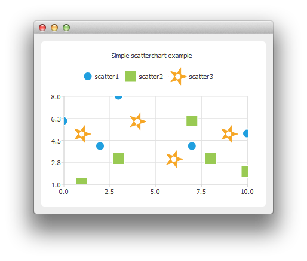

Creating Scatter Charts
Note: This is part of the Charts with Widgets Gallery example.

To create scatter charts, a QScatterSeries instance is needed. Here we create a scatter series instance, and set the type and width of outline for the scatter points.
auto series0 = new QScatterSeries; series0->setName("scatter1"); series0->setMarkerShape(QScatterSeries::MarkerShapeCircle); series0->setMarkerSize(15.0); auto series1 = new QScatterSeries; series1->setName("scatter2"); series1->setMarkerShape(QScatterSeries::MarkerShapeRectangle); series1->setMarkerSize(20.0); auto series2 = new QScatterSeries; series2->setName("scatter3"); series2->setMarkerShape(QScatterSeries::MarkerShapeRectangle); series2->setMarkerSize(30.0);
We add the data to be shown. We can use the append() member function or use the stream operator.
series0->append(0, 6); series0->append(2, 4); series0->append(3, 8); series0->append(7, 4); series0->append(10, 5); *series1 << QPointF(1, 1) << QPointF(3, 3) << QPointF(7, 6) << QPointF(8, 3) << QPointF(10, 2); *series2 << QPointF(1, 5) << QPointF(4, 6) << QPointF(6, 3) << QPointF(9, 5);
We can define the brush of the scatter series to be an image. Here the image is a star created using QPainterPath.
QPainterPath starPath; starPath.moveTo(28, 15); for (int i = 1; i < 5; ++i) { starPath.lineTo(14 + 14 * qCos(0.8 * i * M_PI), 15 + 14 * qSin(0.8 * i * M_PI)); } starPath.closeSubpath(); QImage star(30, 30, QImage::Format_ARGB32); star.fill(Qt::transparent); QPainter painter(&star); painter.setRenderHint(QPainter::Antialiasing); painter.setPen(QRgb(0xf6a625)); painter.setBrush(painter.pen().color()); painter.drawPath(starPath); series2->setBrush(star); series2->setPen(QColor(Qt::transparent));
In the end we enable anti-aliasing, set the chart title, and add the scatter series onto the chart. We also disable drop shadow, because it would not look good on an application with only chart view shown.
auto chart = new QChart; chart->addSeries(series0); chart->addSeries(series1); chart->addSeries(series2); chart->setTitle("Simple Scatter Chart"); chart->createDefaultAxes(); chart->setDropShadowEnabled(false);
We can also use the scatter points as legend markers.
chart->legend()->setMarkerShape(QLegend::MarkerShapeFromSeries);
The chart is ready to be shown.